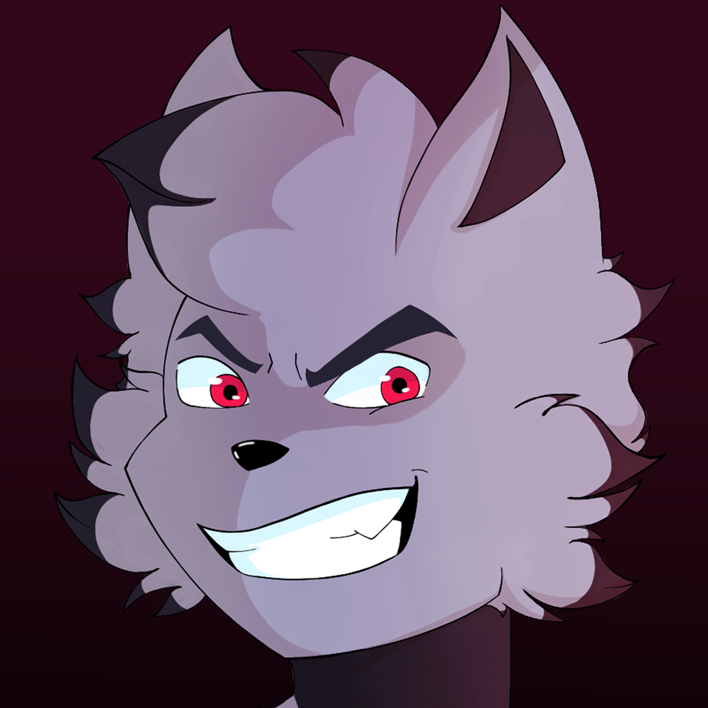

wolfarmoon website :3

i'm wolfarmoon, welcome to my digital home. as you may alredy guessed, i'm the fucking webmaster of this site :3
short bio: I like making computer games, i also yap and make music and art. Read more in the about page.
← This critter on the left is my homonym OC! Thanks Danilyx, would commision again! lov ya :3
peak handwritten HTML and CSS! A lovely pain in the ass.
why dis so empt?
This site is in continuous maintenance by the time going. I would love making something kwel but my 'tism levels hasn't trascended yet! Hope this changes soon :3.
temporary hosting info summary
i'm setting up a server to have all my projects under my governance. however, on the meantime i'm still using github pages to host static content hell nah.
also, i'm reworking my blog to use a custom templating engine.